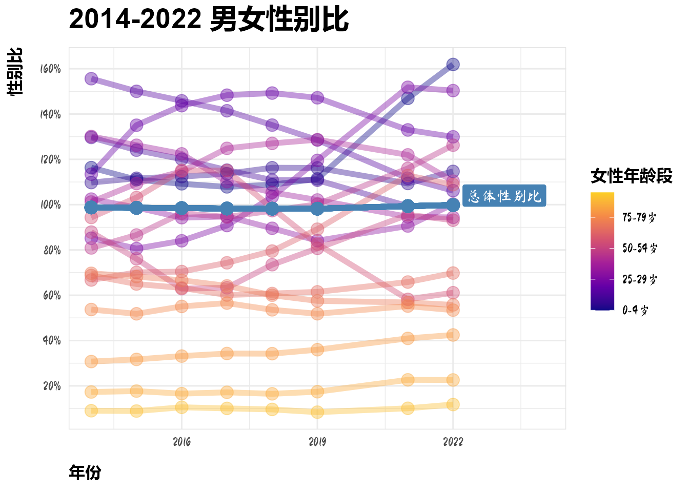

library(tidyverse)
library(ggrepel)数据清洗
dt_rate <- read_csv("data/出生率死亡率自然增长率.csv",
locale = locale(encoding = "GBK"))Rows: 3 Columns: 10
── Column specification ────────────────────────────────────────────────────────
Delimiter: ","
chr (1): 指标
dbl (9): 2022年, 2021年, 2020年, 2019年, 2018年, 2017年, 2016年, 2015年, 2014年
ℹ Use `spec()` to retrieve the full column specification for this data.
ℹ Specify the column types or set `show_col_types = FALSE` to quiet this message.dt_rate <- dt_rate %>%
pivot_longer(
cols = - 指标,
names_to = "year"
) %>%
pivot_wider(
names_from = 指标
) %>%
mutate(year = parse_number(year))
dt_rate# A tibble: 9 × 4
year `人口出生率(‰)` `人口死亡率(‰)` `人口自然增长率(‰)`
<dbl> <dbl> <dbl> <dbl>
1 2022 6.77 7.37 -0.6
2 2021 7.52 7.18 0.34
3 2020 8.52 7.07 1.45
4 2019 10.4 7.09 3.32
5 2018 10.9 7.08 3.78
6 2017 12.6 7.06 5.58
7 2016 13.6 7.04 6.53
8 2015 12.0 7.07 4.93
9 2014 13.8 7.12 6.71其他数据集和该数据集情况类似，可以写个函数批量
read_pivot <- function(file) {
read_csv(file, locale = locale(encoding = "GBK")) %>%
pivot_longer(
cols = - 指标,
names_to = "year"
) %>%
pivot_wider(
names_from = 指标
) %>%
mutate(year = parse_number(year))
}files <- fs::dir_ls("data")
file_names <- str_c("dt_", c("age_dist", "rate", "education", "female", "marriage", "age", "gender", "population", "male"))
bind_cols(files, file_names)New names:
• `` -> `...1`
• `` -> `...2`# A tibble: 9 × 2
...1 ...2
<fs::path> <chr>
1 data/人口年龄分布.csv dt_age_dist
2 data/出生率死亡率自然增长率.csv dt_rate
3 data/受教育程度.csv dt_education
4 data/女性年龄分布.csv dt_female
5 data/婚姻状况.csv dt_marriage
6 data/年龄结构.csv dt_age
7 data/性别比.csv dt_gender
8 data/总人口.csv dt_population
9 data/男性年龄分布.csv dt_male dt_list <- map(files, read_pivot)
dt_list <- set_names(dt_list, file_names)
dt_list[1]$dt_age_dist
# A tibble: 10 × 22
year 人口数(人口抽样调查)(人…¹ 0-4岁人口数(人口抽样…² 5-9岁人口数(人口抽样…³
<dbl> <dbl> <dbl> <dbl>
1 2023 NA NA NA
2 2022 1443996 62248 90793
3 2021 1494054 72978 96094
4 2020 NA NA NA
5 2019 1091876 62722 60701
6 2018 1144648 67393 63322
7 2017 1145246 68313 63314
8 2016 1158019 68447 63831
9 2015 21312241 1243566 1174724
10 2014 1124402 63990 63132
# ℹ abbreviated names: ¹`人口数(人口抽样调查)(人)`,
# ²`0-4岁人口数(人口抽样调查)(人)`, ³`5-9岁人口数(人口抽样调查)(人)`
# ℹ 18 more variables: `10-14岁人口数(人口抽样调查)(人)` <dbl>,
# `15-19岁人口数(人口抽样调查)(人)` <dbl>,
# `20-24岁人口数(人口抽样调查)(人)` <dbl>,
# `25-29岁人口数(人口抽样调查)(人)` <dbl>,
# `30-34岁人口数(人口抽样调查)(人)` <dbl>, …dt_list$dt_age_dist <- dt_list$dt_age_dist %>%
pivot_longer(
cols = - c(year, `人口数(人口抽样调查)(人)`),
names_to = "年龄段",
values_to = "人口数"
) %>%
mutate(`年龄段` = str_remove(`年龄段`, "人口数.+")) %>%
rename(`总人口数` = `人口数(人口抽样调查)(人)`)
dt_list$dt_age_dist# A tibble: 200 × 4
year 总人口数 年龄段 人口数
<dbl> <dbl> <chr> <dbl>
1 2023 NA 0-4岁 NA
2 2023 NA 5-9岁 NA
3 2023 NA 10-14岁 NA
4 2023 NA 15-19岁 NA
5 2023 NA 20-24岁 NA
6 2023 NA 25-29岁 NA
7 2023 NA 30-34岁 NA
8 2023 NA 35-39岁 NA
9 2023 NA 40-44岁 NA
10 2023 NA 45-49岁 NA
# ℹ 190 more rowsdt_list$dt_rate <- dt_list$dt_rate %>%
pivot_longer(
cols = -year,
names_to = "比率名称",
names_pattern = "人口([^\\(]+)",
values_to = "比值"
)
dt_list$dt_rate# A tibble: 27 × 3
year 比率名称 比值
<dbl> <chr> <dbl>
1 2022 出生率 6.77
2 2022 死亡率 7.37
3 2022 自然增长率 -0.6
4 2021 出生率 7.52
5 2021 死亡率 7.18
6 2021 自然增长率 0.34
7 2020 出生率 8.52
8 2020 死亡率 7.07
9 2020 自然增长率 1.45
10 2019 出生率 10.4
# ℹ 17 more rowsdt_list$dt_education <- dt_list$dt_education %>%
select(-matches("[^性]人口数|6岁及6岁以上.性")) %>%
pivot_longer(
cols = -year,
values_to = "人口数",
names_to = c("教育程度", "性别"),
names_pattern = "6岁及6岁以上([^男|女]+)(男性|女性)人口数\\(人口抽样调查\\)\\(人\\)"
)
dt_list$dt_education# A tibble: 170 × 4
year 教育程度 性别 人口数
<dbl> <chr> <chr> <dbl>
1 2022 未上过学 男性 14948
2 2022 未上过学 女性 36444
3 2022 小学 男性 167013
4 2022 小学 女性 188341
5 2022 初中 男性 252064
6 2022 初中 女性 215929
7 2022 高中 男性 123426
8 2022 高中 女性 99455
9 2022 大专及以上 男性 137692
10 2022 大专及以上 女性 127723
# ℹ 160 more rowsdt_list$dt_female <- dt_list$dt_female %>%
select(-`女性人口数(人口抽样调查)(人)`) %>%
pivot_longer(
cols = -year,
names_to = c("年龄段", "性别"),
names_pattern = "([^女]+)(女性)",
values_to = "人口数"
)
dt_list$dt_female# A tibble: 160 × 4
year 年龄段 性别 人口数
<dbl> <chr> <chr> <dbl>
1 2022 0-4岁 女性 29658
2 2022 5-9岁 女性 42783
3 2022 10-14岁 女性 42781
4 2022 15-19岁 女性 36873
5 2022 20-24岁 女性 34483
6 2022 25-29岁 女性 40234
7 2022 30-34岁 女性 56267
8 2022 35-39岁 女性 53435
9 2022 40-44岁 女性 47957
10 2022 45-49岁 女性 51025
# ℹ 150 more rowsdt_list$dt_male <- dt_list$dt_male %>%
select(-`男性人口数(人口抽样调查)(人)`) %>%
pivot_longer(
cols = -year,
names_to = c("年龄段", "性别"),
names_pattern = "([^男]+)(男性)",
values_to = "人口数"
)
dt_list$dt_male# A tibble: 160 × 4
year 年龄段 性别 人口数
<dbl> <chr> <chr> <dbl>
1 2022 0-4岁 男性 32589
2 2022 5-9岁 男性 48010
3 2022 10-14岁 男性 49065
4 2022 15-19岁 男性 42687
5 2022 20-24岁 男性 39146
6 2022 25-29岁 男性 44806
7 2022 30-34岁 男性 60488
8 2022 35-39岁 男性 56397
9 2022 40-44岁 男性 50422
10 2022 45-49岁 男性 52930
# ℹ 150 more rowsdt_list$dt_gender <- dt_list$dt_gender %>%
pivot_longer(
cols = -c(year, `性别比(女=100)(人口抽样调查)`),
names_to = "年龄段",
names_pattern = "([^性]+)",
values_to = "性别比"
) %>%
rename(总体性别比 = `性别比(女=100)(人口抽样调查)`)
dt_list$dt_gender# A tibble: 160 × 4
year 总体性别比 年龄段 性别比
<dbl> <dbl> <chr> <dbl>
1 2022 104. 0-4岁 110.
2 2022 104. 5-9岁 112.
3 2022 104. 10-14岁 115.
4 2022 104. 15-19岁 116.
5 2022 104. 20-24岁 114.
6 2022 104. 25-29岁 111.
7 2022 104. 30-34岁 108.
8 2022 104. 35-39岁 106.
9 2022 104. 40-44岁 105.
10 2022 104. 45-49岁 104.
# ℹ 150 more rowsdt_list$dt_population <- dt_list$dt_population %>%
pivot_longer(
cols = - c(year, `年末总人口(万人)`),
names_to = "类别",
names_pattern = "([^人]+)",
values_to = "人口数_万人"
) %>%
rename(总人口_万人 = `年末总人口(万人)`)
dt_list$dt_population# A tibble: 36 × 4
year 总人口_万人 类别 人口数_万人
<dbl> <dbl> <chr> <dbl>
1 2022 141175 男性 72206
2 2022 141175 女性 68969
3 2022 141175 城镇 92071
4 2022 141175 乡村 49104
5 2021 141260 男性 72311
6 2021 141260 女性 68949
7 2021 141260 城镇 91425
8 2021 141260 乡村 49835
9 2020 141212 男性 72357
10 2020 141212 女性 68855
# ℹ 26 more rowsdt_list$dt_age <- dt_list$dt_age %>%
pivot_longer(
cols = - c(year, `年末总人口(万人)`, contains("抚养比")),
names_to = "年龄段",
names_pattern = "([^人]+)",
values_to = "人口_万人"
) %>%
mutate(抚养比 = case_when(
年龄段 == "0-14岁" ~ `少儿抚养比(%)`,
年龄段 == "65岁及以上" ~ `老年抚养比(%)`,
TRUE ~ NA
)) %>%
select(-`少儿抚养比(%)`, -`老年抚养比(%)`)
dt_list$dt_age# A tibble: 27 × 6
year `年末总人口(万人)` `总抚养比(%)` 年龄段 人口_万人 抚养比
<dbl> <dbl> <dbl> <chr> <dbl> <dbl>
1 2022 141175 46.6 0-14岁 23908 24.8
2 2022 141175 46.6 15-64岁 96289 NA
3 2022 141175 46.6 65岁及以上 20978 21.8
4 2021 141260 46.3 0-14岁 24678 25.6
5 2021 141260 46.3 15-64岁 96526 NA
6 2021 141260 46.3 65岁及以上 20056 20.8
7 2020 141212 45.9 0-14岁 25277 26.2
8 2020 141212 45.9 15-64岁 96871 NA
9 2020 141212 45.9 65岁及以上 19064 19.7
10 2019 141008 41.5 0-14岁 23689 23.8
# ℹ 17 more rowsdt_list$dt_marriage %>%
mutate(across(-year, is.na)) %>%
pivot_longer(cols = -year) %>%
mutate(name = fct(name, levels = colnames(dt_list$dt_marriage))) %>%
ggplot(aes(x = year, y = fct_rev(name), fill = value)) +
geom_tile() +
scale_fill_brewer(palette = "Paired", direction = -1,
limits = c(FALSE, TRUE), labels = c("存在", "缺失")) +
theme(legend.position = "top") +
coord_equal(xlim = c(2003.5, 2023.5), expand = FALSE) +
labs(x = "年份", y = "类别", fill = "数据是否存在")由上图可知，和配偶相关的数据在2015年以后被整合为有配偶人数、男性有配偶人数和女性有配偶人数
dt_list$dt_marriage <- dt_list$dt_marriage %>%
mutate(`15岁及以上男性有配偶人口数(人口抽样调查)(人)` = rowSums(pick(matches("男性.*有配偶")), na.rm = TRUE),
`15岁及以上女性有配偶人口数(人口抽样调查)(人)` = rowSums(pick(matches("女性.*有配偶")), na.rm = TRUE),
`15岁及以上有配偶人口数(人口抽样调查)(人)` = `15岁及以上男性有配偶人口数(人口抽样调查)(人)` + `15岁及以上女性有配偶人口数(人口抽样调查)(人)`) %>%
select(-matches("婚有配偶")) %>%
mutate(across(everything(), \(x) if_else(x == 0, NA, x)))
dt_list$dt_marriage %>%
mutate(across(-year, is.na)) %>%
pivot_longer(cols = -year) %>%
mutate(name = fct(name, levels = colnames(dt_list$dt_marriage))) %>%
ggplot(aes(x = year, y = fct_rev(name), fill = value)) +
geom_tile() +
scale_fill_brewer(palette = "Paired", direction = -1,
limits = c(FALSE, TRUE), labels = c("存在", "缺失")) +
labs(fill = "数据是否存在") +
theme(legend.position = "top") +
coord_equal(xlim = c(2003.5, 2023.5), expand = FALSE) +
labs(x = "年份", y = "类别")dt_list$dt_marriage <- dt_list$dt_marriage %>%
select(year, contains("性"), - `15岁及以上男性人口数(人口抽样调查)(人)`, - `15岁及以上女性人口数(人口抽样调查)(人)`) %>%
pivot_longer(
cols = - year,
names_to = c("性别", "婚姻状况"),
names_pattern = "15岁及以上(.性)([^人]+)",
values_to = "人口数"
)数据可视化
总人口
十年来人口趋势
p_pop_gen_1 <- dt_list$dt_population %>%
filter(str_detect(类别, "性")) %>%
ggplot(aes(x = year, y = 人口数_万人, color = 类别)) +
geom_line(linewidth = 2) +
geom_point(size = 4) +
scale_y_continuous(labels = scales::label_comma()) +
labs(x = "年份", y = "人口数(万人)")p_pop_gen_2 <- dt_list$dt_population %>%
mutate(所占比例 = 人口数_万人 / 总人口_万人) %>%
filter(str_detect(类别, "性")) %>%
ggplot(aes(x = year, y = 所占比例, color = 类别)) +
geom_line(linewidth = 2) +
geom_point(size = 4) +
scale_y_continuous(labels = scales::label_percent(), limits = c(0.425, 0.575)) +
labs(x = "年份")library(patchwork)
p_pop_gen_1 / p_pop_gen_2 +
plot_layout(guides = "collect") +
plot_annotation(title = "2014 - 2022 男女人口趋势")&
scale_color_viridis_d(option = "C", end = 0.5)男女人口数量的上升趋于平缓，而男女的比例大致不变
p_pop_city_1 <- dt_list$dt_population %>%
filter(!str_detect(类别, "性")) %>%
ggplot(aes(x = year, y = 人口数_万人, color = 类别)) +
geom_line(linewidth = 2) +
geom_point(size = 4) +
scale_y_continuous(labels = scales::label_comma()) +
labs(x = "年份", y = "人口数(万人)")p_pop_city_2 <- dt_list$dt_population %>%
mutate(所占比例 = 人口数_万人 / 总人口_万人) %>%
filter(!str_detect(类别, "性")) %>%
ggplot(aes(x = year, y = 所占比例, color = 类别)) +
geom_line(linewidth = 2) +
geom_point(size = 4) +
scale_y_continuous(labels = scales::label_percent(), limits = c(0.25, 0.75)) +
labs(x = "年份")p_pop_city_1 / p_pop_city_2 +
plot_layout(guides = "collect") +
plot_annotation(title = "2014 - 2022 城乡人口变化") &
scale_color_viridis_d(option = "C", end = 0.5)农村人口不断流向城市
出生率死亡率自然增长率
dt_list$dt_rate %>%
mutate(alpha = if_else(比率名称 == "死亡率", 0.25, 1)) %>%
ggplot(aes(x = year, y = 比值/100, color = 比率名称, alpha = alpha)) +
geom_line(linewidth = 2) +
geom_point(size = 4) +
scale_y_continuous(labels = scales::label_percent()) +
scale_alpha(range = c(0.25, 1)) +
scale_color_viridis_d(option = "C", end = 0.5) +
labs(y = "比值", x = "年份", title = "2014 - 2022 \n人口出生率、死亡率、自然增长率") +
guides(alpha = "none") 需要把颜色或者透明度调一调
死亡率基本持平而，自然增长率的下降主要是由于出生率的下降而导致的
年龄结构
p_age_1 <- dt_list$dt_age %>%
ggplot(aes(year, 人口_万人, color = 年龄段)) +
geom_line(linewidth = 2) +
geom_point(size = 4) +
scale_y_continuous(labels = scales::label_comma()) +
labs(y = "人口（万人）")
p_age_2 <- dt_list$dt_age %>%
# filter(!is.na(抚养比)) %>%
ggplot(aes(year, 抚养比/100, color = 年龄段)) +
geom_line(linewidth = 2) +
geom_point(size = 4) +
#scale_color_discrete(breaks = c("0-14岁", "65岁及以上")) +
scale_y_continuous(labels = scales::label_percent()) +
labs(y = "抚养比")
p_age_1 / p_age_2 +
plot_annotation(title = "2014-2022 年龄结构") +
plot_layout(guides = "collect") &
scale_color_viridis_d(option = "C", end = 0.5)Warning: Removed 9 rows containing missing values or values outside the scale range
(`geom_line()`).Warning: Removed 9 rows containing missing values or values outside the scale range
(`geom_point()`).人口年龄分布
dt_list$dt_age_dist %>%
ggplot(aes(x = year, y = 总人口数)) +
geom_line(linewidth = 2, col = "#A52A2A") +
geom_point(size = 4, col = "#A52A2A") +
scale_y_continuous(labels = scales::label_comma()) +
labs(x = "年份", y = "样本量", title = "2014-2022 样本量")Warning: Removed 20 rows containing missing values or values outside the scale range
(`geom_line()`).Warning: Removed 40 rows containing missing values or values outside the scale range
(`geom_point()`).该数据是抽样数据，且2015年所抽查的样本数量远高于其他年份，因此采用比例数据代替原有数据
dt_list$dt_age_dist %>%
mutate(占总人口比例 = 人口数 / 总人口数) %>%
ggplot(aes(x = 年龄段, y = 占总人口比例, fill = 年龄段)) +
geom_col() +
facet_wrap(vars(year), nrow = 2) +
scale_fill_viridis_d(option = "C") +
scale_x_discrete(breaks = c("0-4岁", "75-79岁")) +
scale_y_continuous(labels = scales::label_percent()) +
guides(fill = "none") +
theme(axis.text.x = element_text(angle = - 45)) +
labs(title = "2014-2022 人口年龄分布")Warning: Removed 40 rows containing missing values or values outside the scale range
(`geom_col()`).人口结构呈现出纺锤型，还未变为倒金字塔型
dt_list$dt_age_dist %>%
mutate(占总人口比例 = 人口数 / 总人口数,
age_num = as.integer(str_extract(年龄段, "[^-|岁]+"))) %>%
arrange(year) %>%
mutate(first_ob = first(占总人口比例),
last_ob = nth(占总人口比例, -2),
.by = 年龄段) %>%
mutate(alpha = if_else(last_ob - first_ob < 0, 1, 0.7)) %>%
mutate(label = if_else(year == 2022 & alpha == 1, 年龄段, NA),
label_y = if_else(!is.na(label), 占总人口比例, NA)) %>%
ggplot(aes(x = year, y = 占总人口比例, color = age_num, group = age_num, alpha = alpha)) +
geom_line(linewidth = 2) +
geom_point(size = 4) +
geom_label_repel(aes(x = 2022, y = label_y, label = label), nudge_x = 2.2, nudge_y = 0.015, seed = 123) +
labs(color = "年龄段") +
scale_color_viridis_c(option = "C", breaks = c(0, 25, 50, 75), labels = c("0-4岁", "25-29岁", "50-54岁", "75-79岁")) +
scale_y_continuous(labels = scales::label_percent()) +
scale_alpha_continuous(range = c(0.3, 1)) +
guides(alpha = "none") +
labs(x = "年份", title = "2014-2022 年龄分布变化")Warning: Removed 20 rows containing missing values or values outside the scale range
(`geom_line()`).Warning: Removed 40 rows containing missing values or values outside the scale range
(`geom_point()`).Warning: Removed 193 rows containing missing values or values outside the scale range
(`geom_label_repel()`).可以看出与十年前相比，年轻人在总人口中所占的比例不断下降
男性年龄分布与女性年龄分布
dt_gender <- dt_list$dt_male %>%
bind_rows(dt_list$dt_female)
dt_gender <- dt_list$dt_age_dist %>%
rename(该年龄段总人数 = 人口数) %>%
left_join(dt_gender, join_by(year, 年龄段)) %>%
mutate(该性别总人数 = sum(人口数), .by = c(year, 性别)) %>%
relocate(year, 年龄段, 性别, 人口数, 该性别总人数, 该年龄段总人数)
dt_gender# A tibble: 360 × 7
year 年龄段 性别 人口数 该性别总人数 该年龄段总人数 总人口数
<dbl> <chr> <chr> <dbl> <dbl> <dbl> <dbl>
1 2023 0-4岁 <NA> NA NA NA NA
2 2023 5-9岁 <NA> NA NA NA NA
3 2023 10-14岁 <NA> NA NA NA NA
4 2023 15-19岁 <NA> NA NA NA NA
5 2023 20-24岁 <NA> NA NA NA NA
6 2023 25-29岁 <NA> NA NA NA NA
7 2023 30-34岁 <NA> NA NA NA NA
8 2023 35-39岁 <NA> NA NA NA NA
9 2023 40-44岁 <NA> NA NA NA NA
10 2023 45-49岁 <NA> NA NA NA NA
# ℹ 350 more rowsdt_gender %>%
filter(!is.na(性别)) %>%
mutate(占该性别总人口数的比例 = 人口数 / 该性别总人数) %>%
ggplot(aes(x = 年龄段, y = 占该性别总人口数的比例, fill = 年龄段)) +
geom_col() +
facet_grid(性别 ~ year) +
scale_fill_viridis_d(option = "C") +
scale_x_discrete(breaks = c("0-4岁", "75-79岁")) +
scale_y_continuous(labels = scales::label_percent()) +
guides(fill = "none") +
theme(axis.text.x = element_text(angle = -45)) +
labs(title = "2014-2022 男女年龄分布")dt_gender %>%
filter(!is.na(性别)) %>%
mutate(占该性别总人口数的比例 = 人口数 / 该性别总人数,
age_num = as.integer(str_extract(年龄段, "[^-|岁]+"))) %>%
arrange(year) %>%
mutate(first_ob = first(占该性别总人口数的比例),
last_ob = nth(占该性别总人口数的比例, -2),
.by = 年龄段) %>%
mutate(alpha = if_else(last_ob - first_ob < 0, 1, 0.7)) %>%
mutate(label = if_else(year == 2022 & alpha == 1, 年龄段, NA),
label_y = if_else(!is.na(label), 占该性别总人口数的比例, NA)) %>%
ggplot(aes(x = year, y = 占该性别总人口数的比例, color = age_num, group = age_num, alpha = alpha)) +
geom_line(linewidth = 2) +
geom_point(size = 4) +
geom_label_repel(aes(x = 2022, y = label_y, label = label), nudge_x = 2.2, nudge_y = 0.015, seed = 123) +
labs(color = "年龄段") +
facet_wrap(vars(性别), nrow = 1) +
scale_color_viridis_c(option = "C", breaks = c(0, 25, 50, 75), labels = c("0-4岁", "25-29岁", "50-54岁", "75-79岁")) +
scale_y_continuous(labels = scales::label_percent()) +
scale_alpha_continuous(range = c(0.3, 1)) +
guides(alpha = "none") +
theme(legend.position = "bottom",
legend.key.width = unit(35, "pt")) +
labs(title = "2014-2022 男女年龄分布变化")Warning: Removed 306 rows containing missing values or values outside the scale range
(`geom_label_repel()`).性别比
dt_list$dt_gender# A tibble: 160 × 4
year 总体性别比 年龄段 性别比
<dbl> <dbl> <chr> <dbl>
1 2022 104. 0-4岁 110.
2 2022 104. 5-9岁 112.
3 2022 104. 10-14岁 115.
4 2022 104. 15-19岁 116.
5 2022 104. 20-24岁 114.
6 2022 104. 25-29岁 111.
7 2022 104. 30-34岁 108.
8 2022 104. 35-39岁 106.
9 2022 104. 40-44岁 105.
10 2022 104. 45-49岁 104.
# ℹ 150 more rowsdt_list$dt_gender %>%
mutate(age_num = as.integer(str_extract(年龄段, "[^-|岁]+"))) %>%
ggplot(aes(year, 性别比/100 , color = age_num, group = age_num)) +
geom_line(linewidth = 2, alpha = 0.4) +
geom_point(size = 4, alpha = 0.4) +
geom_line(aes(year, 总体性别比/100), color = 'steelblue',
linewidth = 2) +
geom_point(aes(year, 总体性别比/100), color = 'steelblue', size = 4) +
geom_label(x = 2022.2, y = 1.04, label = "总体性别比",
fill = "steelblue", color = "white", hjust = 0) +
scale_color_viridis_c(option = "C", breaks = c(0, 25, 50, 75), labels = c("0-4岁", "25-29岁", "50-54岁", "75-79岁"), end = 0.95) +
scale_y_continuous(labels = scales::label_percent(), n.breaks = 10) +
labs(color = "年龄段", y = "性别比", x = "年份", title = "2014-2022 男女性别比") +
xlim(2014, 2023.5)在年轻群体中性别比往往较高，但情况在近年有所改善。
考虑到女性通常与比自己年长的男性结婚，构造错位性别比：比如5-9岁的男性人数与0-4岁的女性人数之比
dt_male <- dt_list$dt_male %>%
mutate(人口数 = lead(人口数),
.by = year) %>%
rename(男性人口数 = 人口数)
dt_female <- dt_list$dt_female %>%
# mutate(人口数 = lead(人口数),
# .by = year) %>%
rename(女性人口数 = 人口数)
dt_gender <- dt_male %>%
left_join(dt_female, join_by(year, 年龄段))
dt_gender %>%
rename(女性年龄段 = 年龄段) %>%
mutate(总体性别比 = sum(男性人口数, na.rm = TRUE) / sum(女性人口数, na.rm = TRUE), .by = year) %>%
mutate(性别比 = 男性人口数 / 女性人口数,
age_num = as.integer(str_extract(女性年龄段, "[^-|岁]+"))) %>%
ggplot(aes(year, 性别比 , color = age_num, group = age_num)) +
geom_line(linewidth = 2, alpha = 0.4) +
geom_point(size = 4, alpha = 0.4) +
geom_line(aes(year, 总体性别比), color = 'steelblue',
linewidth = 2) +
geom_point(aes(year, 总体性别比), color = 'steelblue', size = 4) +
geom_label(x = 2022.2, y = 1.04, label = "总体性别比",
fill = "steelblue", color = "white", hjust = 0) +
scale_color_viridis_c(option = "C", breaks = c(0, 25, 50, 75), labels = c("0-4岁", "25-29岁", "50-54岁", "75-79岁"), end = 0.9) +
scale_y_continuous(labels = scales::label_percent(), n.breaks = 10) +
labs(color = "女性年龄段", y = "性别比", x = "年份", title = "2014-2022 男女性别比") +
xlim(2014, 2024)Warning: Removed 8 rows containing missing values or values outside the scale range
(`geom_line()`).Warning: Removed 8 rows containing missing values or values outside the scale range
(`geom_point()`).
可以看出，错位性别比相较于性别比更加失衡
受教育程度
该数据也是抽样数数据，每年的样本量不同，应该转化为比例数据
dt_list$dt_education %>%
mutate(总人口数 = sum(人口数), .by = year) %>%
mutate(所占比例 = 人口数 / 总人口数,
教育程度 = factor(教育程度, levels = c("大专及以上", "高中", "初中", "小学", "未上过学"))) %>%
ggplot(aes(year, 所占比例, color = 教育程度,
shape = 性别, alpha = 教育程度)) +
geom_line(linewidth = 1.8) +
geom_point(size = 3.5) +
facet_wrap(vars(性别), nrow = 2) +
scale_alpha_manual(values = c(1, rep(0.4, 4))) +
scale_y_continuous(labels = scales::label_percent()) +
scale_color_viridis_d(option = "C", end = 0.8) +
labs(x = "年份", title = "2004-2023 受教育情况") +
guides(shape = "none")中国人的受教育水平在不断提高
婚姻状况
该数据集也是抽样数据
dt_list$dt_marriage %>%
mutate(总人口数 = sum(人口数), .by = year) %>%
mutate(所占比例 = 人口数 / 总人口数,
婚姻状况 = factor(婚姻状况, c("未婚", "有配偶", "离婚", "丧偶"))) %>%
ggplot(aes(year, 所占比例, color = 婚姻状况,
shape = 性别, alpha = 婚姻状况)) +
geom_line(linewidth = 2) +
geom_point(size = 4) +
facet_wrap(vars(性别), nrow = 1) +
scale_y_continuous(labels = scales::label_percent()) +
scale_color_viridis_d(option = "C", end = 0.5) +
scale_alpha_manual(values = c(1, rep(0.4, 3))) +
labs(x = "年份", title = "2004-2023 婚姻状况") +
guides(shape = "none") +
theme(legend.position = "bottom")Warning: Removed 8 rows containing missing values or values outside the scale range
(`geom_line()`).Warning: Removed 24 rows containing missing values or values outside the scale range
(`geom_point()`).男性未婚人口所占的比例在不断上升